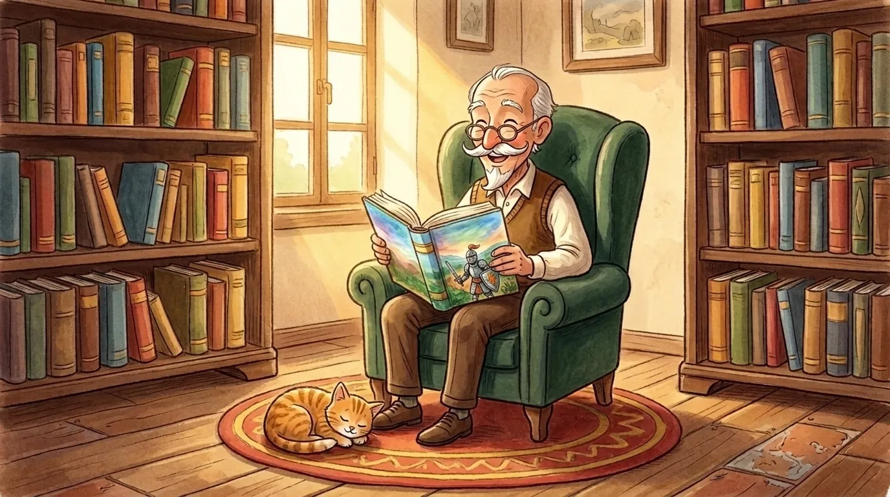
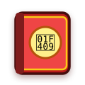
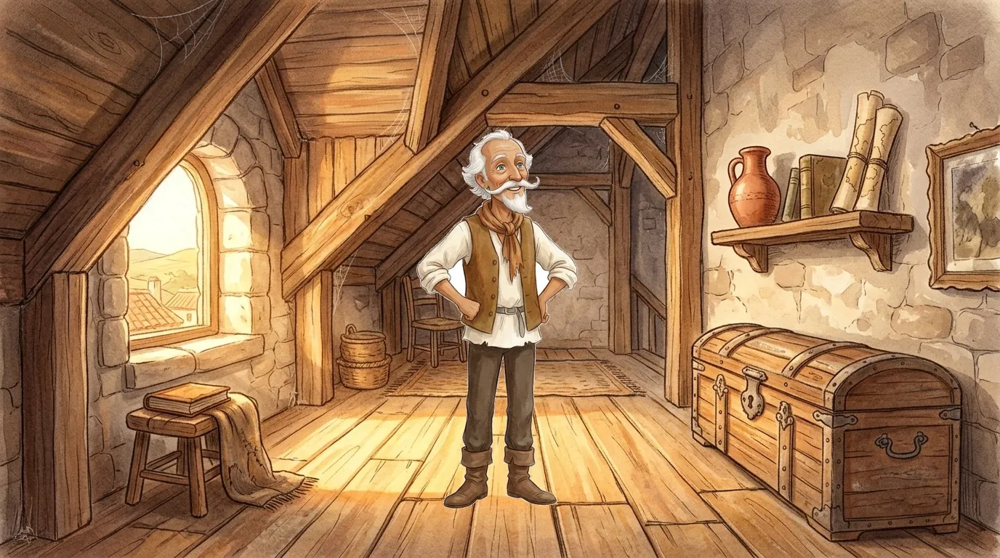
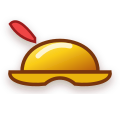
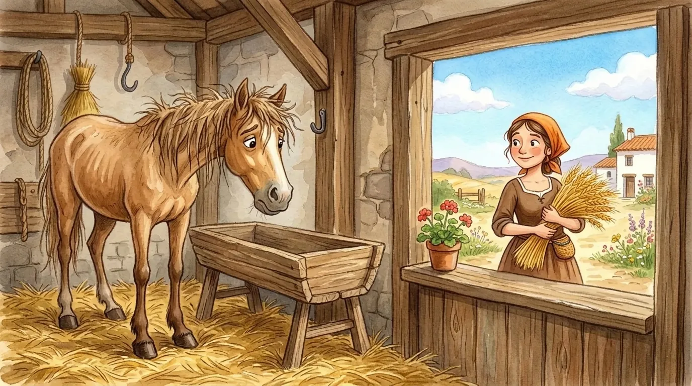
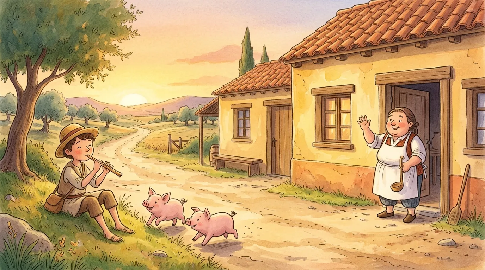

Dom Quixote de La Mancha Parte 1: O Cavaleiro da Super Imaginação
Há mais de quatrocentos anos, o genial escritor espanhol Miguel de Cervantes criou uma das mais belas e amadas histórias de todo o planeta!
Conheça Alonso Quixano, um bondoso fidalgo de coração gigante, cheio de coragem e IMAGINAÇÃO. Ao lado do seu querido cavalo ROCINANTE, ele decidiu percorrer os caminhos do mundo para proteger os indefesos, espalhar a bondade e provar que todos nós podemos ser nobres CAVALEIROS em nossas próprias vidas!


DRAGÕES CASTELOS
CASTELOS
 CAVALEIROS
CAVALEIROS
O Vovô que Lia Dia e Noite!
Em um pequeno vilarejo da Espanha chamado La Mancha, vivia um fidalgo de olhar doce e alma generosa: o senhor Alonso Quixano. Seu maior tesouro eram os seus queridos LIVROS de cavalaria antiga!
Alonso lia com tanto encantamento que passava noites inteiras acordado, viajando por terras distantes onde nobres CAVALEIROS defendiam a justiça, enfrentavam perigos e protegiam quem mais precisava.
De tanto mergulhar no poder das palavras, seu quarto se enchia de pura poesia: o velho mapa brilhava no ar, histórias ganhavam asas e até o manso gatinho da sala, aos seus olhos afetuosos, transformava-se em um magnífico LEÃO GUARDIÃO!

 ARMADURA
ARMADURA

BACIA LANÇA
LANÇA
A Armadura do Bisavô!
— O mundo precisa de mais bondade, justiça e bravura! — pensou o fidalgo com os olhos brilhando. E para essa grandiosa missão, escolheu um nome sonoro e destemido: DOM QUIXOTE de La Mancha!
Subindo ao sótão poeirento de sua casa, abriu um velho baú esquecido há quase cem anos. Lá dentro repousava a antiga ARMADURA de ferro que pertencera ao seu bisavô, coberta de ferrugem.
Com muito bom humor, colocou uma BACIA de latão na cabeça como capacete, segurou uma tampa de panela como ESCUDO e amarrou uma flâmula vermelha num cabo de madeira para fazer sua LANÇA. Para seus olhos sonhadores, nada brilhava mais do que aquele reluzente ELMO DE OURO!

 MAÇÃ
MAÇÃ
 CENOURA
CENOURA
 ESCOVA
ESCOVA
Rocinante e a Bela Dulcineia!
Nenhum cavaleiro andante viaja sem uma valorosa montaria. No estábulo da fazenda descansava seu antigo cavalo de trabalho: magrinho, com costelas aparentes, mas com um olhar manso e leal.
Dom Quixote pensou durante quatro dias inteiros até escolher um nome nobre para o amigo, batizando-o de ROCINANTE — o primeiro e mais fiel de todos os cavalos!
Alimente-o com uma doce MAÇÃ, uma crocante CENOURA e passe a ESCOVA para deixá-lo tão altivo quanto um veloz CORCEL real!
E a quem dedicar todas as suas vitórias? Dom Quixote escolheu a doce camponesa da aldeia vizinha, Aldonza Lorenzo, consagrando-a em seus pensamentos como a formosa princesa DULCINEIA del Toboso!

 TROMBETA
TROMBETA
 SOPA
SOPA
Pousada ou Castelo Real?
Ao entardecer, após cavalgar pelas colinas douradas de Montiel, Dom Quixote avistou uma simples POUSADA de beira de estrada com telhas de barro e paredes de adobe.
Mas, aos olhos do sonhador cavaleiro, as paredes rústicas se transformaram num grandioso CASTELO com altas torres prateadas e pontes levadiças!
Quando um jovem pastor soprou uma flauta rústica para recolher seus porquinhos, Dom Quixote escutou triunfantes TROMBETAS reais. E recebido com carinho pelo bondoso dono da pousada, saboreou uma quentinha tigela de SOPA de pão com alho como se estivesse no mais nobre banquete de reis!